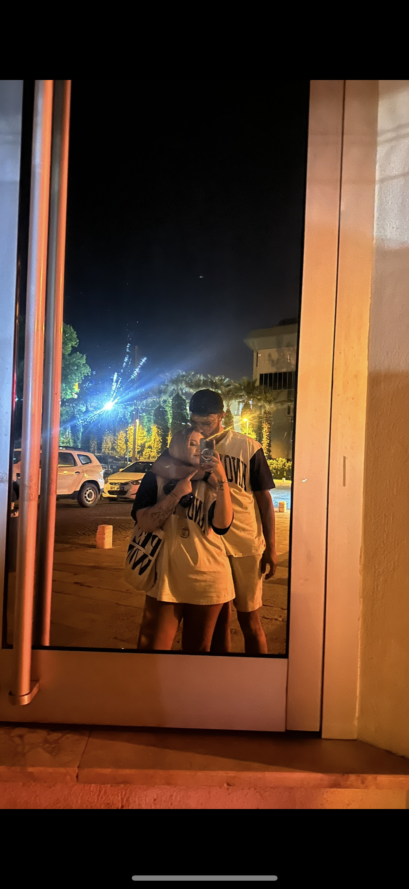
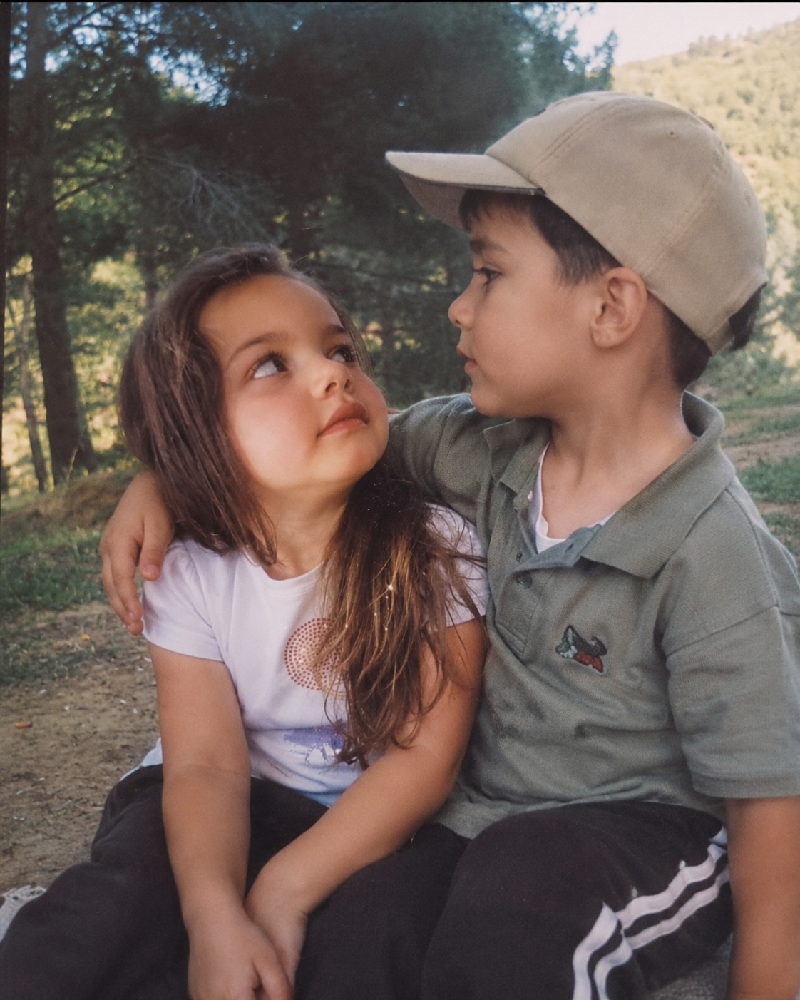

Anılarımız ve daha niceleri




Ceren,
Bu mesajı seni ikna etmek için değil, sana karşı olan sorumluluğumu yerine getirmek için yazıyorum.
Sana yaşattığım kırgınlıkların farkındayım. Aynı hatayı birden fazla kez yaparak sana verdiğim güveni sarstım ve bunun hiçbir bahanesi olmadığını biliyorum. O anlarda ne düşündüğüm ya da neden yaptığım önemli değil; sonuçta seni üzdüm ogün ve bunun sorumluluğu tamamen bana ait.
Seni kaybetme ihtimaliyle yüzleşince aslında hayatımdaki yerini ve değerini daha iyi anladım. Ama bunu yaşamak zorunda bırakmamam gerekiyordu. Keşke sana sevgimi sözlerle değil, davranışlarımla daha iyi gösterebilseydim.
Şu an senden hemen affetmeni ya da her şeyi unutmanı beklemiyorum. Güven kırıldığında sözlerin tek başına yeterli olmadığını biliyorum. Sadece şunu bilmeni istiyorum; yaptığım hataların farkındayım ve onları tekrar etmemek için kendim üzerinde çalışmaya kararlıyım. Çünkü değişmek istediğim için değil, değişmem gerektiğini anladığım için bunu yapacağım.
Sen benim için çok değerli bir insansın. Birlikte yaşadığımız güzel anların, paylaştığımız duyguların ve bana kattığın her şeyin kıymetini biliyorum. Seni kırdığım için gerçekten üzgünüm.
Bundan sonra vereceğin her karara saygı duyacağım. Ama içimde kalan tek şey, sana içtenlikle özür borçlu olduğumu söylemekti. Çok özür dilerim..
Seni çok sevdim her zaman seveceğim her şey için teşekkür ederim Ceren.